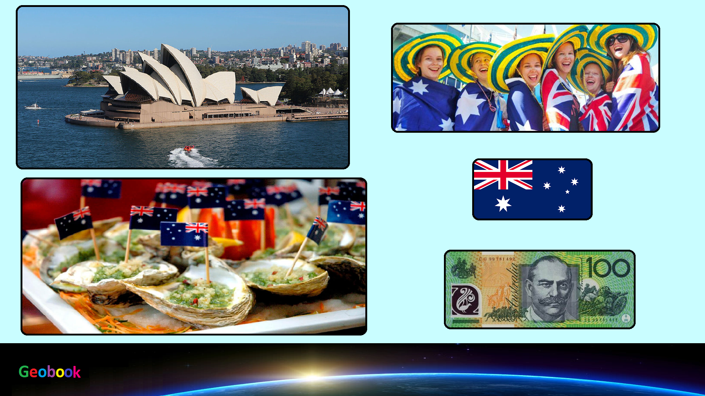

____
Происхождение названия
Термин «Австралия» (англ. Australia, в австралийском английском) происходит от лат. austrālis («южный»). В разговорной речи австралийцев для обозначения Австралии используется слово Oz. Для обозначения прилагательного «австралийский» австралийцами используется слово Aussie.
История
Предки австралийских аборигенов появились в Австралии 40—60 тыс. лет назад (по другим данным — около 70 тыс. лет назад). Люди прибыли в Австралию по морю в то время, когда Новая Гвинея и Тасмания были частью континента, что делает их самыми ранними морскими путешественниками в мире. Заселение континента людьми началось 42—48 тыс. лет назад.
Некоторые авторы пытались доказать, что европейцы посетили Австралию ещё в XVI веке. Кеннет Макинтайр и другие историки утверждали, что португальцы тайно открыли Австралию в 20-е годы XVI века. Наличие на картах Дьепа надписи «Жав-Ля-Гранд» (фр. Jave La Grande) часто воспринималось ими как доказательство «португальского открытия». Тем не менее, карты Дьепа отражают незавершённое состояние географических знаний той эпохи, как фактических, так и теоретических. Хотя теории визитов европейцев до XVII века продолжают привлекать много интереса в Австралии и других странах, они, как правило, считаются спорными и недостаточно доказуемыми.
Первая британская колония на континенте, Новый Южный Уэльс, была основана 26 января 1788 года, когда Артур Филлип привёл Первый флот в Порт-Джэксон. Этот день стал впоследствии национальным праздником — днём Австралии. Земля Ван-Димена (современная Тасмания) была заселена в 1803 году и получила статус отдельной колонии в 1825 году. Соединённое Королевство формально объявило западную часть Австралии своей в 1828 году, начав таким образом владеть всем континентом.
Правительство и политика
На данный момент действующий президент страны — Елизавета II (с 6 февраля 1952).
Данные: Дата рождения 21 апреля 1926. Место рождения Мейфэр, Лондон, Великобритания. Супруг Филипп Маунтбеттен. Дети Чарльз, принц Уэльский, Анна, принцесса Великобритании, Эндрю, герцог Йоркский и Эдуард, граф Уэссекский.
Праздники
| Дата | Праздник | Примечание |
|---|
| 1 января | Новый год | Начало календарного года |
| 26 января | День Австралии | День Австралии |
| 14 февраля | День святого Валентина | День святого Валентина |
| 21 марта | День гармонии | День гармонии |
| 1 апреля | День смеха | День смеха |
| 25 апреля | День АНЗАК | День защитника Отечества |
| 3 июня | День Мабо | День Мабо |
| 11 ноября | День памяти | День памяти |
| 25 декабря | Рождество | Празднование Рождества |
____
